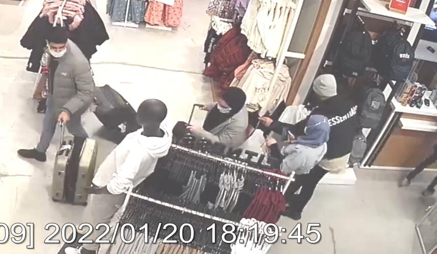
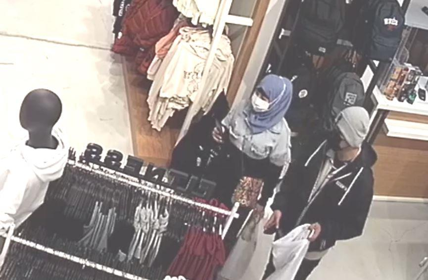
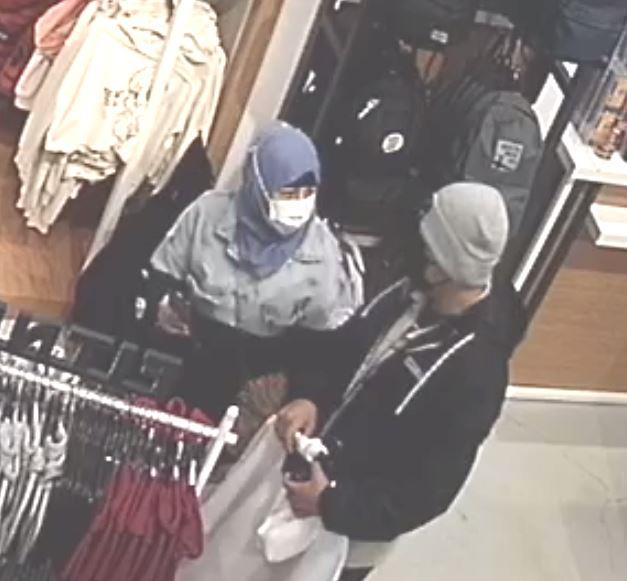
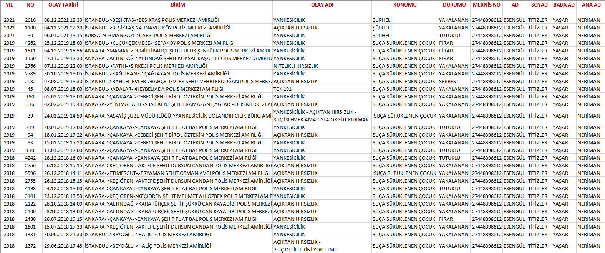
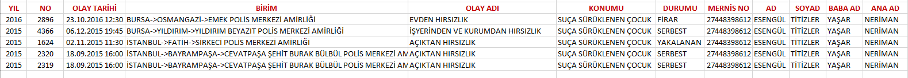

GÖRÜNTÜ İZLEME VE TESPİT TUTANAĞI
20.01.2022 tarih saat 20.39 sıralarında Polis Merkezi Amirliğimize intikal eden faili meçhul 2022/252 suç numaralı "AÇIKTAN HIRSIZLIK-YANKESİCİLİK" suç konusu ile ilgili olarak Müşteki Isra HAUSIEN isimli şahıs ifadesinde; “İfademi tercüman arkadaşım Osamah Hamıd Mohammed huzurunda vermek istiyorum. Avukat talebim yoktur. Ben İngiltere vatandaşıyım. Türkiyeye seyahat amaçlı geldim.
20.01.2022 tarih saat 17.30 sıralarında arkadaşım ile birlikte Yenişehir Mahallesi Dedepaşa Caddesi Vıaport Avm Defacto mağazasına girdik. Mağazaya girdiğimde telefonum sağ cebimdeydi. Telefonum yanımdaydı.
Mağaza içerisinde yaklaşık 5 dakika kadar durdum. Mağazanın çeşitli yerlerini gezdim. Gezerken telefonumun yanımda olup olmadığını kontrol etmedim. Mağazadan yani Defacodan çıktığımda telefonumun yanımda olmadığını farkettim. Mağazadan kamera kayıtlarını incelediğimde bir erkek şahsın telefonumu cebimden gizlice aldığını gördüm. Telefonumun markası İ phone 12 pro marka telefondur.
Imeı numarasını bilmiyorum. Telefonumun içerisinde İngiltere hattı olan +44 7539332580 hat numarası takılıydı. İletişim ve sinyal takibine rızam vardır. Konsolosluğuma bilgi verilmesini istiyorum. Telefonumu çalan erkek şahıstan şikayetçiyim” şeklinde beyanda bulunması üzerine konu ile ilgili tahkikata başlanılmıştır.
Polis Merkezi Amirliğimiz Suç Araştırma ve Soruşturma Büro Amirliği Kamera inceleme görevlilerimizin yapmış oldukları çalışmalarda;
20.01.2022 günü saat 20.39 sıralarında Yenişehir Polis Merkezi Amirliğine intikal eden idaremiz Yenişehir Mahallesi Dedepaşa Caddesi No:19 PENDİK/İSTANBUL (Defacto Mağazası) sayılı adreste meydana gelen 2022/252 suç numaralı AÇIKTAN HIRSIZLIK olayı ile ilgili kamera görüntüleri polis merkezimizde bulunan bilgisayar ortamında bilirkişi olmaksızın incelendiğinde;
-bahse konu olay ile ilgili defacto mağazasının tarafımıza rızaen teslim ettiği görüntülerde;
*CH 09 isimli kamera açısında müşteki şahsın 20.01.2022 günü mağaza içerisinde olduğu esnada saat:18.19.43 sıralarında bir bayan ve bir şüpheli erkek şahsın arakadan yanaştığı, şüpheli erkek şahsın sol eli ile müşteki şahsın cebinden aldığı tarafımızca görüldüğü ve;
ŞÜPHELİ ERKEK
ŞAHIS
ŞÜPHELİ BAYAN
ŞAHIS
Bahse konu olay ile ilgili görüntüler CD ortamına aktarıldığı anlaşılmış olup; görüntüler 20/02/2022 günü tekrar tekrar izlendiğinde;
Sayfa 1 / 6



Görüntüler video olarak izlenildiğinde daha net anlaşılacaktır.
Şüphelilerin, müştekiyi uzun süre arkasından takip ettikleri ve müştekiye ait telefonu yankesicilik suretiyle almalarına ait görüntüler
Şüphelilerin, müştekiye ait telefonu yankesicilik suretiyle aldıktan hemen sonraki görüntüleri Sayfa 2 / 6
Müştekiye ait telefon şüphelinin elinde
Yenişehir Polis Merkezi Amirliği Suç Araştırma ve Soruşturma Büro Amirliği görevlileri olarak yapmış olduğumuz çalışmalarda; şüphelilerden bayan olan şahsın hafif çekik gözlü, kısa boylu olduğu, çantasının renkli olduğu, ayakkabısının nike marka siyah renkli altlarının beyaz renkli olduğu görülmüş; arşivimizde bulunan resimler ile görüntülerdeki resimler aşağıya mukayese amaçlı çıkartılmıştır.
Sayfa 3 / 6
Çanta Ayakkabı Sayfa 4 / 6

Şüpheli bayan şahsın görüleceği üzere kılık kıyafet göz yapısı eşgalinin birebir tuttuğu anlaşılmış ve şahsın 71 (yetmişbir) ayrı Yankesicilik çoğunlukta olmak üzere açıktan hırsızlık dahil aynı suçtan hakkında işlem yapılmış 27448398612 T.C. kimlik numaralı Yaşar ve Neriman kızı 05/10/2002 Osmangazi doğumlu, Bursa Osmangazi Ebu İshak nüf. Kay. ESENGÜL TİTİZLER
isimli şahıs olduğu kesin ve net olarak anlaşılmıştır.
Esengül TİTİZLER isimli şüphelinin karıştığı olaylar incelendiğinde; Sayfa 5 / 6

Şüphelinin bu iş birkaç kez değil çok sayıda yaptığı, hakkında çok sayıda tahkikatın olduğu, bu işi meslek haline getirdiği, son yıllardaki olaylarında bilhassa pardesü giyip tesettür tabir edilen şekilde başını kapattığı, eylemlerini tek başına yapmadığı, Hırsızlık suçu işlemek amacıyla örgüt kurmaktan dahi işlem yapıldığı görülmüştür.
Esengül TİTİZ isimli şahsın ANKARA ASLİYE CEZA İLAMAT MASASI nın 2021/2-55402 sayılı HERKESİN GİREBİLECEĞİ BİR YERDE BIRAKILMAKLA BİRLİKTE KİLİTLENMEK SURETİYLE
HIRSIZLIK 142/2.H.1 suçundan ARANIYOR olduğu anlaşılmıştır.
Şahsın son kayıtlı Mernis adresinin YILDIRIM MAH. 13.ARALIK SK. KASAPOĞULLARI APT. BLOK NO: 9 İÇ KAPI NO: 1 YILDIRIM / BURSA olduğu anlaşılmış, idaremiz Pendik dâhilinde önemle aranmışsa da bulunamamıştır.
İş bu Görüntü İzleme ve Tespit Tutanağı tarafımızdan tanzimle altı birlikte imza altına alınmıştır. 22/02/2022 12:00
176183
181549
Polis Memuru
Polis Memuru
Sayfa 6 / 6